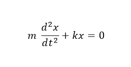
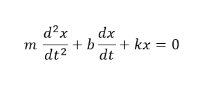
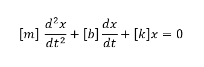
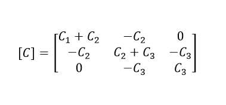
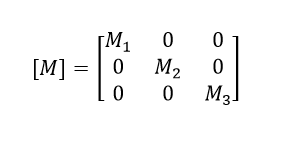
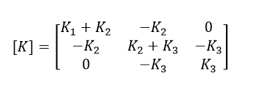

Teoría
Amortiguamiento critico
El coeficiente de amortiguamiento crítico es el valor más pequeño del amortiguamiento que anula completamente la vibración y representa la línea divisoria entre oscilación y no oscilación (Alarcón Campos, 2015).

Coeficientes de amortiguamiento
El coeficiente de amortiguamiento es un parámetro teórico capaz de explicar la disipación de energía debida a las fricciones que frenan el movimiento. No es un parámetro físico real al cual se puede acceder con una medición simple (Escalante, y otros, 2016).
Dinámica estructural
La dinámica estructural es el estudio de los cuerpos o conjuntos de partículas en movimiento, esta se divide en dos campos, la primera de estas es la cinemática, la cual estudia la geometría del movimiento, relacionando el desplazamiento, la velocidad, la aceleración y el tiempo, sin tener en cuenta las causas del movimiento; y la cinética estudia la relación entre las fuerzas que actúan sobre un cuerpo, la masa del cuerpo y su movimiento, permitiendo predecir los movimientos que causan las fuerzas externas o determinar las fuerzas necesarias para producir un movimiento dado (García Reyes, 1998).
Fuente: https://www.youtube.com/watch?v=Av7BFq6j9ps&ab_channel=israelascencio
Ecuaciones de la dinamica estructural
(Chopra, 2012) Refiere que el movimiento que genera una fuerza externa en una estructura se la representa con la segunda ley de Newton (establece que las aceleraciones que experimenta un cuerpo son proporcionales a las fuerzas que recibe) con la siguiente ecuación diferencial.

Donde,
m: masa del cuerpo
d2x/dt2: aceleración
k: rigidez
x: desplazamiento
La anterior ecuación refleja el movimiento de un pórtico de un solo piso sin fricción, por lo que el sistema oscilaría de manera infinita; lo anteiror es imposible, por lo que la fricción en el sistema se representa de la siguiente manera.

Donde,
b: fricción
dx/dt: velocidad
Cuando se realiza el análisis de varios pisos se debe hacer uso de matrices cuadradas para la masa, fricción y rigidez por cada piso que se va aumentando en el pórtico.

Estructuras en Ingeniería Civil
Es cualquier tipo de construcción formada por uno o varios elementos enlazados entre sí que están destinados a soportar la acción de una serie de fuerzas aplicadas sobre ellos; cabe resaltar que estos elemtos se caracterizan por ser lineales como vigas y columnas (Chen, 2018), donde su estabilidad depende de su cimentación.

Fuente: https://www.arcus-global.com/wp/importancia-del-analisis-estructural/
Frecuencias naturales o de resonancia
Es la frecuencia a la cual la rigidez y las fuerzas de inercia se anulan entre sí. En análisis modal, los picos de la función de respuesta en frecuencia se usan para identificar las frecuencias naturales y modos de vibración de la estructura (Molero, 2016).
Fuente: https://www.youtube.com/watch?v=IRkbMkp-33M&ab_channel=ProyectoPERSISTAH
Fuerzas externas
Las estructuras proporcionan resistencia a la deformación cuando se aplica una fuerza externa sobre ellos, estas fuerzas podrían ser las sísmicas (Construmática, 2020), o las armónicas (Marian & Giaralis, 2017). La aplicación de estas fuerzas sobre un cuerpo produce tensiones internas en su estructura donde estas tratan de estirar el elemento y el esfuerzo de compresión intenta comprimir el cuerpo (Universidad de Valencia, 2020).

Fuente: https://www.rcnradio.com/colombia/temblor-sacudio-gran-parte-de-colombia-este-sabado
Matriz de amortiguamiento
Indica el amortiguamiento de la estructura, la cual se escribe de forma diagonal; esta se calcula a partir de las dimensiones estructurales, secciones de los elementos, amortiguamiento del material usado y de las relaciones de amortiguamiento modal (Pacheco, 2013).

Matriz de masa
Es el modelo de masa más sencillo y comúnmente utilizado para el cálculo de estructuras simplificadas. La misma considera que la masa del sistema está concentrada en cada una de las losas y se escribe de forma diagonal como la matriz identidad (Garcés, Genatios, Lafuente, & Mébarki, 2005).


Fuente: Propia
Matriz de rigidez
La matriz de rigidez relaciona los desplazamientos desconocidos de una estructura con las fuerzas exteriores conocidas, con el objetivo de encontrar las reacciones, esfuerzos internos y tensiones en cualquier punto de la estructura (Lizarza, 2011).


Fuente: Propia
Matriz modal
Esta matriz se usa en el proceso de diagonalización que involucra valores propios y vectores propios. Específicamente, la matriz modal [M] para la matriz [A] es la matriz (n×n) formada con los vectores propios de [A] como columnas en [M] (Villa, 2008).

Modos normales
Los modos normales de vibración son casos especiales del movimiento de osciladores acoplados. Corresponden al caso en el que dos partículas se mueven con la misma frecuencia y mantienen un desfase constante de vibración en un punto determinado (Universidad del País Vasco, 2021).

Fuente: http://ific.uv.es/~nebot/Oscilaciones_y_Ondas/Tema_4.pdf
Pórticos
Los elementos como las vigas y columnas enlazados entre sí conforman los pórticos, los cuales son estructuras cuyo comportamiento está gobernado por la flexión, ademas es una de las formas más populares en la construcción de estructuras de concreto reforzado y de acero estructural para edificaciones porque no solo tiene dimensiones longitudinales, sino transversales, como el ancho y la altura (Universidad Santo Tomás, 2020).

Fuente: Propia